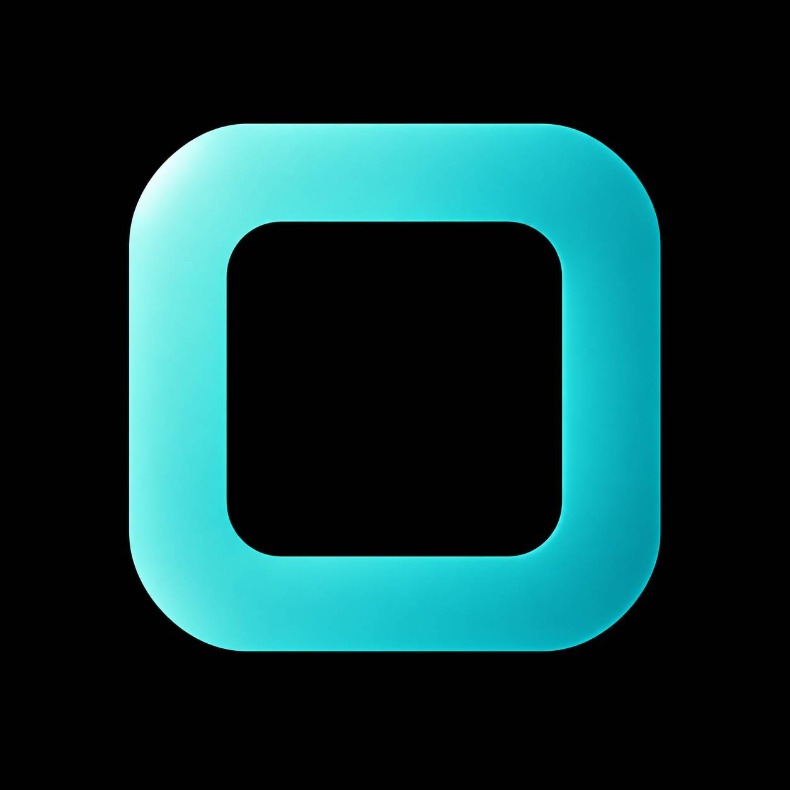

پیامرسانی
چت، پروفایل، تنظیمات و تجربهای آشنا برای ارتباط روزمره.

Comessager یک ایده برای پیامرسانی مدرن است؛ ترکیبی از ارتباط اجتماعی، تجربهای ساده و سریع، و هوش مصنوعیِ قابلکنترل توسط کاربر.
Comessager یک پروژه مفهومی و در حال توسعه برای ساخت یک پیامرسان نسل جدید است؛ محصولی با الهام از تجربههای آشنای پیامرسانها، اما با هویت مستقل.
هدف پروژه این است که پیامرسانی، ارتباط اجتماعی و قابلیتهای هوش مصنوعی در یک محیط یکپارچه قرار بگیرند، بدون اینکه کاربر احساس کند کنترل اطلاعاتش را از دست داده است.
چشمانداز Comessager فراتر از ارسال پیام است.
چت، پروفایل، تنظیمات و تجربهای آشنا برای ارتباط روزمره.
فضایی اجتماعی برای کشف محتوا، موضوعات و پستها با تجربهای ساده و روان.
کاربر مشخص میکند هوش مصنوعی در کدام پیام یا بخش اجازه کمک داشته باشد.
ایدههایی برای تعدیل محتوا و درک رویدادها با کمک مدلهای هوش مصنوعی.
ابزارهای آینده برای کسبوکارها و ارتباط حرفهای درون پلتفرم.
طراحی با توجه به نیاز کاربران ایرانی، با نگاه به امکان توسعه بینالمللی.
یکی از ایدههای اصلی Comessager این است که AI نباید یک جعبه سیاه باشد. برای هر پیام میتوان وضعیت دسترسی AI را مشخص کرد.
لوگوی Comessager فقط یک رنگ ثابت ندارد. در نسخههای مختلف و با توجه به هویت بصری محصول، طیف رنگی آن میتواند تغییر کند؛ همان حس تنوع رنگی که در نسلهای پرچمدار محصولات تکنولوژی دیده میشود.
ساخت زبان بصری، برند و تجربه کاربری Comessager.
ورود، پروفایل، چت و زیرساخت اصلی پیامرسان.
افزودن قابلیتهای هوشمند با کنترل دسترسی کاربر.
توسعه Explore و قابلیتهای اجتماعی پروژه.